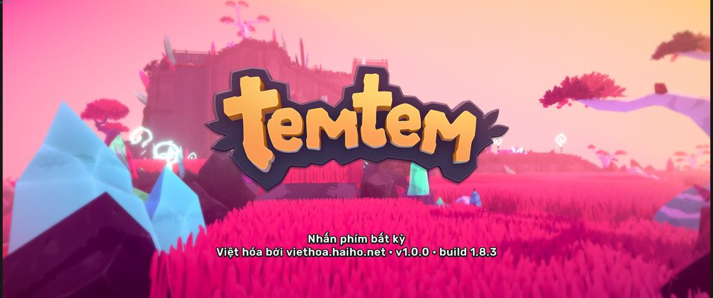
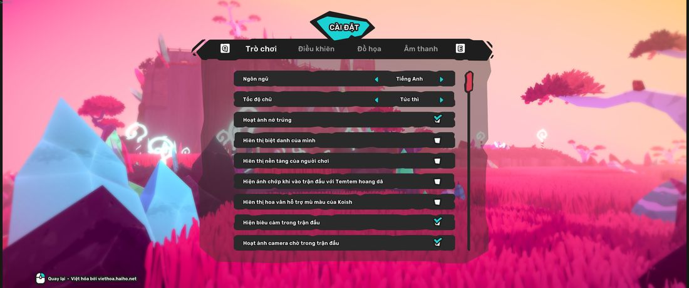
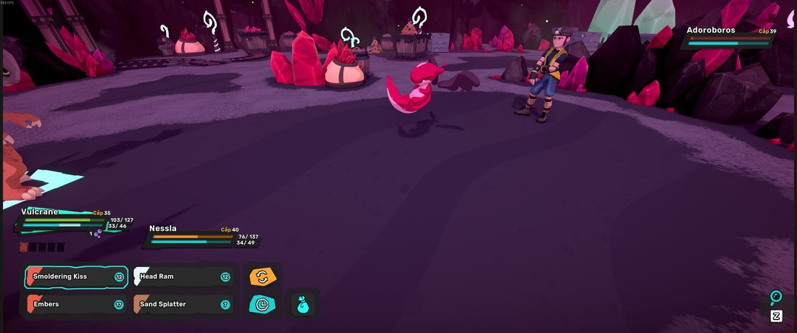

Giới thiệu
Temtem là game bắt và nuôi thú dạng MMO của Crema, ra mắt trên Steam năm 2022. Game chưa có tiếng Việt chính thức — đây là bản dịch độc lập, làm từ đầu, không dựa trên bản dịch nào khác.
Khác với phần lớn bản Việt hóa PC, Temtem không cần BepInEx, không cần DLL, không cần thêm launch option. Bản dịch nằm gọn trong hai file dữ liệu của game, nên cài xong là chạy — kể cả trên Steam Deck.
Tên Temtem, tên chiêu thức, tên vật phẩm và địa danh giữ nguyên tiếng Anh — để bạn tra wiki, đọc hướng dẫn build hay nói chuyện với cộng đồng quốc tế mà không bị lệch thuật ngữ.
- Toàn bộ hội thoại, nhiệm vụ, UI và mô tả chiêu thức đã dịch
- Font gốc của game hỗ trợ sẵn tiếng Việt — không cần cài font ngoài
- Không cần BepInEx / DLL / launch option, chạy được trên Steam Deck (Proton)
- Tên Temtem, tên chiêu, tên vật phẩm và địa danh giữ nguyên tiếng Anh
- Bản dịch nằm ở khe ngôn ngữ English của game — sau khi cài, chọn English là ra tiếng Việt
- Gỡ cài bằng Steam → Verify integrity, không cần công cụ
Hình ảnh trong game



Tải về
Gói cài chỉ chứa phần chữ tiếng Việt và script cài — không kèm file game. Bạn cần sở hữu Temtem trên Steam để cài được.
Hướng dẫn cài
Installer tự tìm thư mục cài game, kiểm tra đúng phiên bản, sao lưu file gốc rồi mới áp bản dịch. Nếu game của bạn khác phiên bản, nó sẽ dừng lại và báo rõ thay vì làm hỏng game.
- Tải
Temtem_Windows.zip(~1.7 MB) và giải nén ra một thư mục bất kỳ. - Tắt hẳn Temtem và Steam nếu đang mở.
- Nhấp đôi
install.bat— script tự tìm thư mục cài game qua Steam, kiểm tra đúng phiên bản, sao lưu file gốc rồi vá. - Nếu Windows hỏi Windows protected your PC, bấm More info → Run anyway (script không ký số).
- Trong game mở Cài đặt → Ngôn ngữ và chọn Tiếng Anh — bản Việt hóa thay nội dung của khe ngôn ngữ đó, nên tên hiển thị vẫn là ”Tiếng Anh” nhưng chữ trong game là tiếng Việt.
- Chuyển sang Desktop Mode (Power → Switch to Desktop).
- Tải
Temtem_Linux.tar.gz(~1.7 MB), giải nén ra~/Downloads. - Mở Konsole trong thư mục vừa giải nén và chạy
bash install.sh. - Script tự dò thư viện Steam, kiểm tra phiên bản, sao lưu rồi vá — không cần sudo.
- Về Game Mode, mở Temtem, vào Cài đặt → Ngôn ngữ và chọn Tiếng Anh.
- Tải
Temtem_Linux.tar.gzvà giải nén. - Chạy
bash install.sh— script dò~/.local/share/Steam,~/.steam/steam, thư viện phụ và cả bản Steam Flatpak. - Game chạy Proton hay native đều được; đường dẫn game được dò tự động.
- Mở game và chọn ngôn ngữ Tiếng Anh.
Bản dịch áp lên hai file dữ liệu của game. Mỗi lần Steam cập nhật game, các file đó bị ghi đè và bản dịch sẽ mất — chạy lại installer là xong (nếu phiên bản đã được hỗ trợ).
Gỡ cài đặt
- Steam → chuột phải Temtem → Thuộc tính → Tệp đã cài đặt → Xác minh tính toàn vẹn của tệp trò chơi.
- Steam tự tải lại hai file gốc, game trở về tiếng Anh. Không cần công cụ, không cần xóa tay.
Hỏi đáp
Cài bản Việt hóa có bị ban không?
Bản dịch chỉ thay dữ liệu văn bản phía client (hai file .assets), không đụng vào logic game, không can thiệp vào kết nối hay giao dịch. Temtem không dùng anti-cheat kernel. Tuy vậy đây là game online và mọi thay đổi file đều là tự chịu rủi ro — nếu bạn lo, hãy thử bằng một tài khoản phụ trước.
Game cập nhật thì bản Việt hóa còn dùng được không?
Nếu bản cập nhật có sửa hai file dữ liệu, Steam sẽ ghi đè và bản dịch mất — khi đó installer sẽ báo đúng phiên bản và dừng lại thay vì làm hỏng game. Bạn xác minh lại để chơi bản gốc, mình sẽ phát hành bản Việt hóa khớp phiên bản mới.
Có cần cài BepInEx hay plugin gì không?
Không. Temtem dùng I2 Localization với toàn bộ chuỗi nằm trong file assets, nên chỉ cần thay file — không DLL, không launch option, không ảnh hưởng tới Steam Deck.
Vì sao tên Temtem, tên chiêu và vật phẩm vẫn là tiếng Anh?
Đó là chủ ý. Tên riêng giữ nguyên để khớp với wiki, video hướng dẫn và cộng đồng quốc tế; phần mô tả, hội thoại và UI thì dịch toàn bộ.
Bản Việt hóa có miễn phí không?
Miễn phí và sẽ luôn miễn phí. Nếu bạn muốn ủng hộ, có nút mời mình một ly cà phê — nhưng chơi hết game và báo lỗi giúp đã là quý rồi.
Cài xong mà game vẫn tiếng Anh?
Vào Cài đặt → Ngôn ngữ và chọn “Tiếng Anh” — bản Việt hóa nằm ở đúng khe đó, nên tên hiển thị vẫn là Tiếng Anh nhưng nội dung là tiếng Việt. Nếu vẫn tiếng Anh, chạy lại installer: nó sẽ báo file đã vá hay chưa.
Lịch sử thay đổi
v1.0.1
- Chữ ký Việt hóa không còn hiện ở cửa sổ sử dụng vật phẩm (trước đây nó đi theo nhãn Quay lại dùng chung)
- Tên vật phẩm trở về tiếng Anh, khớp wiki và cộng đồng quốc tế; phần mô tả vẫn dịch đầy đủ
- Chữ ký chỉ còn ở màn hình tiêu đề (kèm số phiên bản) và màn hình cảm ơn cuối game
v1.0.0
- Bản phát hành đầu tiên: toàn bộ hội thoại, UI, nhiệm vụ, mô tả chiêu thức và vật phẩm
- Thêm chữ ký Việt hóa ở màn hình chính và Cài đặt
- Tên riêng (Temtem, chiêu thức, vật phẩm, địa danh) giữ nguyên tiếng Anh
- Installer cho Windows và Linux/Steam Deck
Bản Việt hóa do người hâm mộ thực hiện, không liên kết với nhà phát hành hay Steam. Vui lòng mua game để ủng hộ nhà phát triển.